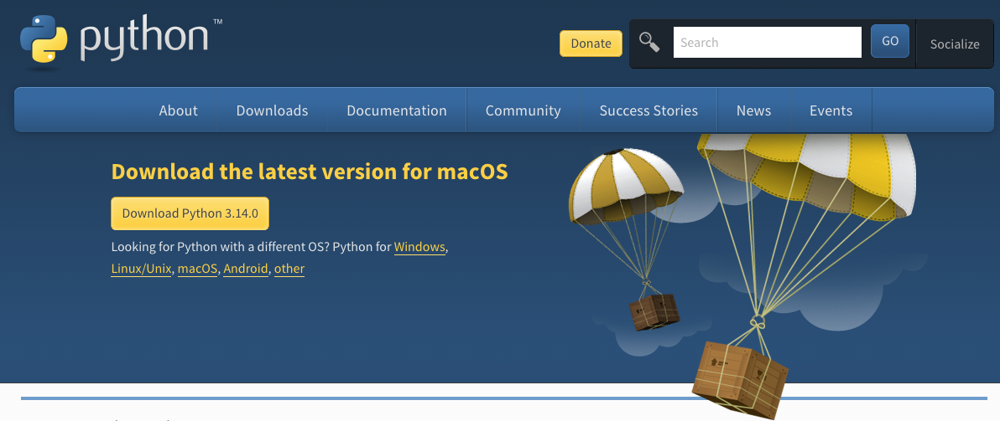
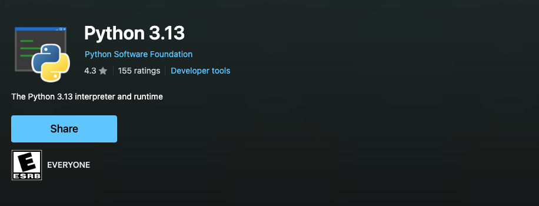

Learning Objectives
Introduction
One of the most frustrating parts of learning to code can be properly setting up the coding language on your local machine, especially as there can be multiple ways of doing it, including operating system (OS) specific methods.
Whilst we do offer you the chance to edit, run, and save Python code in a pre-configured computing space with GitHub Codespaces (see the Handbook), it is good to learn how to set up Python on your local machine as this is what you'll be using for your research.
This section will run through how to install Python on both Windows and Mac machines (sorry Linux users), both through the Python.org download and through an OS-specific method. Lastly, we'll run through Python installation through Anaconda, a research computing software package, and uv, a developer tool for Python.
As of writing this we recommend Python version 3.14 as a stable and up-to-date release to use. Python version numbers are divided into major and minor releases: for example, the 3 in Python 3.14 is the major version, while 14 is the minor version. Preview releases are labelled clearly as alpha, beta, or release candidate versions and may be unstable, but the latest final release is stable. You can see the status of each version here.
Checking if Python is already installed
The following section utilises the terminal (Mac & Linux) or command line/PowerShell (Windows). See essential tools for an introduction to this topic.
On some systems Python comes pre-installed. You can try running the python command in the terminal (Mac & Linux) or the Command Prompt (Windows) to start the Python interpreter to check and see if it is already installed. On Windows you can also try the py command which is a launcher that is more likely to work. If it is installed you will see a response which will include the version number, see below:
Python 3.14.4 (main, Apr 7 2026, 10:00:00) [Clang 19.1.6 ] on darwin
Type "help", "copyright", "credits" or "license" for more information.If nothing appears or an error is given then you will need to install Python. Additionally, check the version - the current stable release is 3.14.
Your Python version should be at least 3.9 or later.
You can also just print the version number by adding the version flag like so:
python --version.
python3 can be used in place of python. It was added when Python upgraded from Python 2 to Python 3, to distinguish between the two when you had multiple versions on your system. On many modern systems they point to the same Python installation, but depending on your operating system and installation method they may still refer to different interpreters.
Mac
Via Python.org
Older macOS versions sometimes shipped with Python 2 already installed. Python 2 is no longer supported and contains outdated syntax, so it should not be used.
The best way to install Python is through a downloadable installer from Python.org. Simply head to the link provided and click the yellow download link to get the latest version.

The file should be a standard macOS installer package file (.pkg). Double-click on the file to activate the installation process, following the steps it provides. For a more detailed walkthrough head to this guide.
After completion there should be a Python 3.X folder in your Applications folder. You should also test it through the methods set out in the Checking if Python is Already Installed section.
Via Homebrew
Some of you may be used to installing software on your Mac using Homebrew, a software package manager. Homebrew-installed Python can be useful if you are already used to it, as it gives you an easy ability to manage your installation. However, there are some drawbacks. Homebrew will update Python automatically as a dependency for other packages, which has the potential to break other projects. In some setups you may also need to add this Python to your system PATH if the python command is not found after installation.
To install, make sure your Homebrew is up-to-date and call the following command in your Mac terminal:
brew install pythonYou can install a specific version by using
brew search python to find an earlier version, although it only contains a few recent versions. Replace python with your version of choice, i.e., python@3.11. To verify the installation use brew list python to see the installed files. You can prevent automatic upgrades of Python via brew pin python and then call upgrades when wanted with brew upgrade python.Once installed, test whether Python is available by following the steps in Checking if Python is Already Installed. If entering the command
python gives zsh: command not found: python, you may need to add Homebrew Python to your PATH. To do this, edit the .zprofile file, which sets up any new terminal window. To do so write:open -e ~/.zprofilein the terminal and add:
export PATH="$(brew --prefix python)/libexec/bin:$PATH"to the last line in the file. To have the changes take effect you will need to quit and restart the terminal. Once restarted, verify that Python is installed as instructed previously.
Windows
Via Python.org
As with Mac, the most reliable method to install Python on Windows is through the official installer from Python.org. Navigate to the downloads page and click the yellow download button to get the latest version for Windows. Current official guidance uses the Python install manager, which can help manage Python installations on Windows more cleanly. See here for a more detailed walkthrough.
The downloaded file will be a Windows executable installer (.exe). Follow the steps in the installer to set up Python or the Python install manager. On Windows, the py command is the preferred launcher and is often the most reliable way to start Python, even if python is not available directly in your PATH.
After installation, you should test it using the methods outlined in the Checking if Python is Already Installed section. On Windows, you can use either the python command or the py command, with py usually being the more reliable option.
Via Microsoft Store
Windows 10 and 11 users can also install Python through the Microsoft Store. This now fits more closely with the current official Windows guidance, as the Python install manager may be installed through either Python.org or the Store. The Microsoft Store route can be simpler for some users because it handles much of the setup automatically.
To install via Microsoft Store, simply search the store for Python and select the official Python release or install manager.

The Microsoft Store version usually handles setup automatically, so you are less likely to encounter common PATH issues. However, some advanced Python packages may not work correctly with the Microsoft Store version, particularly those that require compilation or system-level access.
Verify the installation as shown previously.
Common Windows Issues
"Python is not recognised as an internal or external command"
This usually means the python command is not available in your system PATH. Solutions:
- Try using
pyinstead ofpython - If you used the Python.org installer: re-run the installer or install manager and review the install options
- Manually add Python to PATH through System Properties > Environment Variables
Anaconda
Anaconda is a self-contained Python data science distribution that contains:
- Python (you can select the version)
- A large collection of commonly used Python packages (extra, more specific Python code)
- conda: A tool to manage these packages
- Anaconda Navigator: A desktop graphical interface to manage your packages and environments
Why Anaconda and What is an Environment?
Anaconda is often recommended to researchers and beginners as it handles a lot for you, such as environments and packages (see essential tools), and within a graphical interface. Due to this, it is often installed on all university computers and used within teaching sessions for students.
Installing Anaconda
Head to the Anaconda website for installation guides for each OS. Follow their instructions to install and then how to use Anaconda.
Miniconda
The main Anaconda software comes with a lot of bloat, such as the 300 pre-installed packages and graphical interface, that is not needed once you get the hang of things and can eventually be an impediment to projects. If you don't want this but like the conda package/environment handler then consider installing miniconda that only includes conda, the package installing manager.